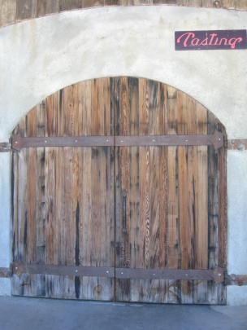

Dobra Zemlja, which means good earth in the owner's native Croatian, produces wines from local vineyards of Amador County.

Vintages:
Amador County Viognier
2008
Amador County Barbera
2007
Amador County Sangiovese
2007
Amador County Sangre de Toro
2007
Amador County Syrah
2006
Amador County Zinfandel
2007
Amador County Late Harvest Zinfandel
2006
Milan Ru�
NV
Amador County Kikas
2007
This page last modified 7 Sept 2009 by
TheWineRater.